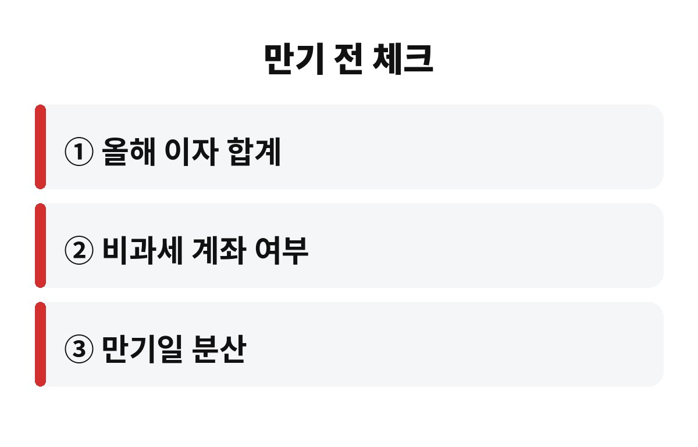

예금 이자 세금은 기본 15.4%이고, 이자를 1,000만원 받으면 154만원이 먼저 빠집니다. 만기를 앞둔 분이라면 내 통장에 실제로 얼마가 들어오는지 궁금하시죠?
이자가 찍힌 걸 보고 기뻐했다가 입금액을 보고 "어, 왜 이것만 들어왔지?" 하신 적 있을 거예요. 범인은 바로 이자소득세입니다. 오늘은 예금 이자 세금이 어떻게 계산되는지, 그리고 어디서부터 더 무거워지는지 차근차근 얘기해 볼게요.
예금 이자에는 이자소득세 14%와 여기에 붙는 지방소득세 1.4%가 더해져 총 15.4%가 원천징수됩니다. 원천징수란 은행이 이자를 주기 전에 알아서 세금을 떼고 나머지만 입금하는 방식이에요. 그래서 우리가 따로 신고하거나 납부할 일은 보통 없습니다.
계산은 아주 단순합니다. 이자가 100만원이면 15만 4천원, 이자가 1,000만원이면 154만원이 세금이에요. 세전 이자만 보고 계획을 세우면 실제 손에 쥐는 돈은 그보다 약 15% 적다는 걸 꼭 기억해 두세요. 예금 이자 세금을 미리 빼고 생각하는 습관이 중요합니다.
| 세전 이자 | 세금(15.4%) | 실제 입금 |
| 100만원 | 15만 4천원 | 84만 6천원 |
| 500만원 | 77만원 | 423만원 |
| 1,000만원 | 154만원 | 846만원 |
여기서 많은 분이 놓치는 부분이 있습니다. 은행과 증권사 이자, 배당 같은 금융소득을 합쳐 연간 2,000만원을 넘으면 금융소득종합과세 대상이 됩니다. 이 경우 2,000만원 초과분은 근로소득 등 다른 소득과 합산해서 누진세율로 과세돼요.
쉽게 말해 월급을 받는 직장인이 큰 목돈을 예금해서 이자가 한꺼번에 많이 들어오면, 초과분에 대해서는 15.4%보다 높은 세율이 적용될 수 있다는 얘기입니다. 정기예금 만기가 한 해에 몰려 있다면 특히 조심하셔야 해요. 같은 돈이라도 만기가 어느 해에 오느냐에 따라 세금이 달라질 수 있거든요.
물론 대부분의 가정은 연 2,000만원 이자까지 가려면 상당히 큰 금액이 필요하니 해당 안 되는 경우가 많습니다. 그래도 목돈이 있는 부모님 세대라면 한 번쯤 확인해 보시는 게 좋아요.
가장 많이 쓰는 방법은 비과세·세금우대 성격의 계좌를 활용하는 것입니다. 가입 조건과 한도, 유지 기간이 계좌마다 다르고 해마다 제도가 바뀔 수 있으니, 가입 전에 금융기관이나 국세청 안내에서 최신 조건을 꼭 확인하세요.
두 번째는 만기 분산입니다. 한 해에 이자가 몰리지 않도록 예금을 쪼개 만기를 나누면 종합과세 기준선을 넘길 위험을 줄일 수 있어요. 세 번째는 가족 간 자산 배분인데, 증여와 관련된 규정이 있으니 반드시 세무 전문가와 상담하고 진행하셔야 합니다.
세금이 아깝다고 무작정 금리가 높은 곳만 찾기보다, 세후 수익률을 기준으로 비교하는 게 훨씬 현명해요. 금리 4%라도 세금을 떼면 실제로는 약 3.38% 수준이니까요.

첫째, 올해 내가 받을 이자와 배당의 합계를 대략 계산해 보세요. 둘째, 비과세나 세금 혜택이 가능한 계좌에 넣을 수 있는 돈이 있는지 보세요. 셋째, 만기일이 한 해에 몰려 있지 않은지 달력에 적어 보세요. 이 세 가지만 해도 낭비되는 세금을 꽤 줄일 수 있습니다.
한 가지 더, 적금은 매달 넣은 돈마다 이자가 붙는 기간이 달라서 같은 금리의 예금보다 실제 이자가 훨씬 적게 나옵니다. 그만큼 세금도 줄어드니 "적금 이자가 이것밖에 안 돼?" 하고 실망하기 전에, 내가 실제로 맡긴 평균 금액과 기간을 먼저 따져 보세요. 이자만 보지 말고 세후 금액으로 비교하는 습관이 쌓이면 불필요한 갈아타기도 줄어듭니다.
또 만기가 되면 자동으로 재예치되는 상품은 이자에 대한 세금이 그해에 바로 빠지니, 자동 연장을 걸어 두었다면 올해 이자 합계에 포함되는지도 꼭 확인해 보세요.
혹시 지금 만기가 다가오는 예금이 있으신가요? 이자가 얼마나 들어올지, 세금은 얼마일지 댓글로 남겨 주시면 같이 계산해 볼게요. 도움이 되셨다면 구독해 두시면 다음 글도 바로 받아보실 수 있어요.
※ 본 글은 일반적인 정보 제공 목적이며 투자 권유가 아닙니다. 세법은 변경될 수 있으니 최종 판단 전 최신 안내를 확인하세요.